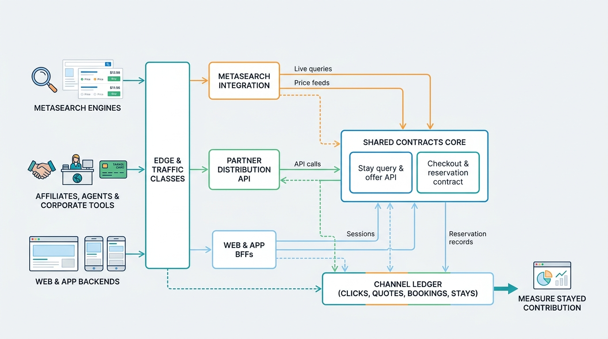

Part VIII — PLATFORM: The Distributed System Underneath
Where Guests Come From: Web, Apps, Metasearch and Partner Distribution

Image generated by Google Gemini (gemini-3-pro-image-preview)
Part VIII — PLATFORM: The Distributed System Underneath

Image generated by Google Gemini (gemini-3-pro-image-preview)